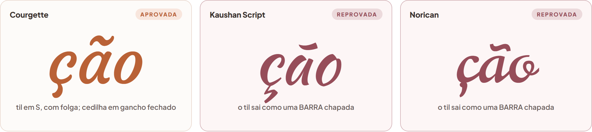

LP 3 · Ana Rodrigues Lopes · ronda 2d · kicker do hero
Uma cursiva no kicker — a aplicada e as três alternativas
Nenhuma das quatro fontes da ronda anterior era cursiva, por isso este lote é
todo novo. As quatro estão aqui renderizadas dentro do hero verdadeiro
— mesmo fundo, mesmo badge IMERSÃO em cima, mesmo H1 em Plus Jakarta Sans 800
por baixo, mesma sub e mesmo botão. O que muda de bloco para bloco é
só a fonte do kicker.
Cada uma está no corpo calibrado pela sua altura-de-x, não no mesmo
número de pixéis: a Caveat a 41px leria muito mais pequena que a Courgette a
41px. Assim comparam-se pelo desenho, não pelo tamanho.
A opção A (Courgette) já está aplicada
nas duas páginas do site, para poder ver no sítio real. As outras três
continuam a um pedido de distância — diga só a letra e troco.
O teste que eliminou metade das candidatas: ç e ã
A palavra é Introdução Alimentar. Tem um
ç e um ã, e é aí que a maioria das cursivas do
Google Fonts falha: o til vem herdado de um desenho genérico, chapado, que
não acompanha o traço da letra. Testei 18 cursivas, renderizei a
palavra real com os acentos e olhei o resultado a 150px antes de decidir seja o que
for.

À esquerda o que se quer; ao centro e à direita, o til achatado
que reprova a fonte
A Kaushan Script e a Norican eram das
mais bonitas do lote e ficaram as duas de fora pelo mesmo motivo: o til de
ção não é um til, é uma barra inclinada. Numa
página cuja palavra-chave tem um til no meio, isso lê-se como erro de
renderização.
Cursiva
altura-de-x
til (ã)
cedilha (ç)
traço
resultado
Courgette
0,505
S completo, com folga
gancho fechado
cheio
aplicada
Caveat 600
0,381
bem desenhado
gancho aberto
médio
opção B
Yellowtail
0,395
bem desenhado
gancho fechado
grosso
opção C
Damion
0,355
bem desenhado
gancho fechado
médio
opção D
Kaushan Script
0,473
barra chapada
ok
grosso
fora — acento
Norican
0,421
barra chapada
ok
médio
fora — acento
Petit Formal Script
0,588
ok
ok
fino
fora — nupcial
Parisienne
0,359
ok
ok
muito fino
fora — some ao lado do H1
Allura
0,303
ok
ok
muito fino
fora — some ao lado do H1
Sacramento
0,236
ok
ok
muito fino
fora — some ao lado do H1
Rouge Script
0,354
ok
ok
muito fino
fora — some ao lado do H1
Bad Script
0,505
ok
ok
fino
fora — some ao lado do H1
Marck Script
0,366
til pequeno
ok
fino
fora — espaço entre palavras enorme
Grand Hotel
0,394
til comprimido
ok
médio
fora — letreiro retro
Playball
0,407
ok
ok
médio
fora — letreiro retro
Berkshire Swash
0,507
ok
ok
grosso
fora — não é cursiva, é serif com swash
Delius
0,515
ok
ok
médio
fora — não é cursiva
Gloria Hallelujah
0,481
ok
ok
médio
fora — marcador, não cursiva
A altura-de-x é a
altura do o minúsculo a dividir pelo corpo da fonte, medida no ficheiro da
própria fonte. É o que decide se a palavra ainda se lê a 23px no
telemóvel: quanto mais baixa, mais corpo é preciso para a mesma legibilidade
— e mais o kicker se aproxima do tamanho do H1, que é justamente o que
não se quer.
Como estava — reprovada em ronda anterior
Playfair Display 500
Serif de alto contraste. Ao lado da Plus
Jakarta 800, que tem peso uniforme, o hero lia-se como duas páginas coladas.
Está aqui só como termo de comparação — já saiu do
site e já saiu do carregamento de fontes.
Imersão
Introdução Alimentar
Imersão gravada•Acesso imediato
Tudo o que precisas de saber para começar
Descobre como começar a introdução alimentar do teu bebé com segurança, com base em informação atualizada.
Quero ter acesso
As quatro cursivas
Opção A · aplicada no site
Courgette 400
Script arredondada de traco medio - lettering de marca, nao caligrafia
1 familia nova (entra no lugar da Playfair, nao acumula)
Imersão
Introdução Alimentar
Imersão gravada•Acesso imediato
Tudo o que precisas de saber para começar
Descobre como começar a introdução alimentar do teu bebé com segurança, com base em informação atualizada.
Quero ter acesso
É a que apliquei. Ganhou por três motivos que nada têm a ver com gosto. Acentos: é a única das quatro em que o til de ção é um S completo, com folga por cima do a, e a cedilha é um gancho fechado que não encosta ao c. Legibilidade: tem a altura-de-x mais alta das candidatas (0,505 contra 0,381 da Caveat), por isso lê-se limpa mesmo a 23px no telemóvel. Peso: o traço é cheio e quase uniforme, portanto não desaparece ao lado do H1 em Plus Jakarta 800 — que foi exactamente a queixa contra a Playfair. E o registo é acolhedor sem ser nem convite de casamento nem letreiro de bistrô.
Opção B
Caveat 600
Manuscrita de caneta - letra a mao, informal e proxima
1 familia nova
Imersão
Introdução Alimentar
Imersão gravada•Acesso imediato
Tudo o que precisas de saber para começar
Descobre como começar a introdução alimentar do teu bebé com segurança, com base em informação atualizada.
Quero ter acesso
A mais calorosa das quatro e a mais próxima de uma nota escrita à mão para outra mãe. Til e cedilha desenhados correctamente. O que a tira do primeiro lugar é a altura-de-x pequena (0,381): para ler com o mesmo peso da Courgette precisa de 52px, o mesmo corpo do H1, e no telemóvel fica frágil. Lê-se como recado pessoal, não como marca.
Opção C
Yellowtail 400
Pincel inclinado de traco grosso - a mais encorpada
1 familia nova
Imersão
Introdução Alimentar
Imersão gravada•Acesso imediato
Tudo o que precisas de saber para começar
Descobre como começar a introdução alimentar do teu bebé com segurança, com base em informação atualizada.
Quero ter acesso
É a que melhor aguenta o peso do H1 800, porque tem o traço mais grosso do grupo. Acentos bem resolvidos. Em troca, a inclinação forte e os remates em gancho puxam o registo para letreiro vintage, e este é o único ponto em que se afasta do universo suave que a identidade da cliente já tem.
Opção D
Damion 400
Pincel corrido, mais leve e mais fluido que a C
1 familia nova
Imersão
Introdução Alimentar
Imersão gravada•Acesso imediato
Tudo o que precisas de saber para começar
Descobre como começar a introdução alimentar do teu bebé com segurança, com base em informação atualizada.
Quero ter acesso
Meio-termo entre a Caveat e a Yellowtail: corre como manuscrita mas tem corpo de pincel. Til e cedilha bem desenhados. O reparo é o A maiúsculo de Alimentar, que tem um remate solto no topo e, a este tamanho, lê-se quase como um Ã. Numa página em que a palavra ao lado já tem um til a sério, isso confunde.
O que fica igual em qualquer uma das quatro
Zero alteração de copy. As palavras Introdução
Alimentar são as mesmas.
Cor coral #B96136, a que já estava aprovada.
O kicker continua menor que o H1 e por baixo do badge IMERSÃO, nos cinco
tamanhos de ecrã. Medido: uma linha só em todos, sem colisão com o
badge.
Uma só família nova no carregamento — a cursiva entrou no
lugar da Playfair Display, não por cima. A página não ficou mais
pesada.
Aplica-se às duas páginas (/ e /ao-vivo.html), que
partilham a mesma folha de estilo.